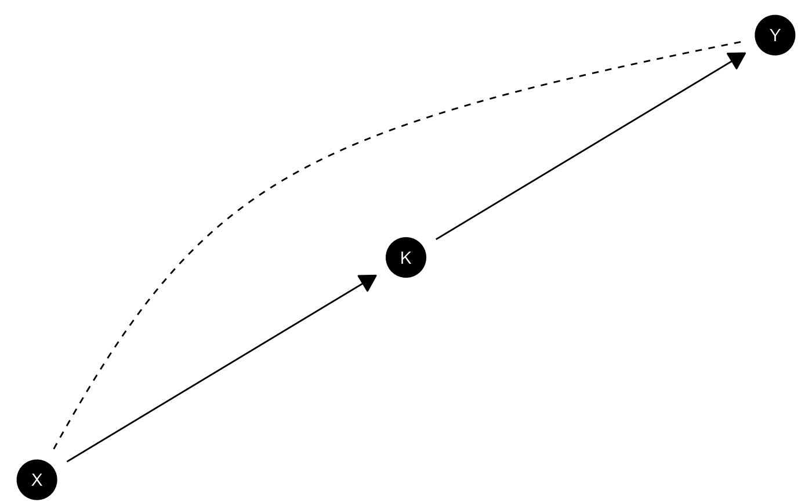

Creates a plot of a DAG using ggplot functionality and a Sugiyama layout from igraph. Unmeasured confounds (<->) are indicated then these are represented as curved dotted lines. Users can control node sizes and colors as well as coordinates and label behavior. Other modifications can be made by adding additional ggplot layers.
Usage
plot_model(
model = NULL,
x_coord = NULL,
y_coord = NULL,
labels = NULL,
title = "",
textcol = "white",
textsize = 3.88,
shape = 16,
nodecol = "black",
nodesize = 12
)Arguments
- model
A
causal_modelobject generated frommake_model- x_coord
A vector of x coordinates for DAG nodes. If left empty, coordinates are randomly generated
- y_coord
A vector of y coordinates for DAG nodes. If left empty, coordinates are randomly generated
- labels
Optional labels for nodes
- title
String specifying title of graph
- textcol
String specifying color of text labels
- textsize
Numeric, size of text labels
- shape
Indicates shape of node. Defaults to circular node.
- nodecol
String indicating color of node that is accepted by ggplot's default palette
- nodesize
Size of node.
- layout
see
Examples
if (FALSE) { # \dontrun{
model <- make_model('X -> K -> Y')
# Simple plot
model |> plot_model()
# Adding additional layers
model |> plot_model() +
ggplot2:: theme(panel.border = ggplot2::element_rect(fill=NA))
# Adding labels
model |>
plot_model(
labels = c("A long name for a \n node", "This", "That"),
nodecol = "white", textcol = "black")
# Controlling positions and using math labels
model |> plot_model(
x_coord = 0:2,
y_coord = 0:2,
title = "Mixed text and math: $\\alpha^2 + \\Gamma$")
} # }
# DAG with unobserved confounding
make_model('X -> K -> Y; X <-> Y') |>
plot(x_coord = 1:3, y_coord = 1:3)
